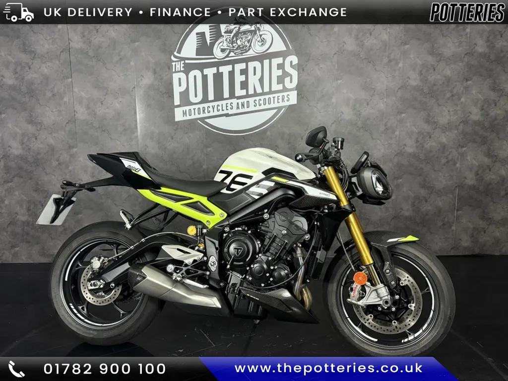

Born on the Moto2 grid
Street Triple 765 Moto2 Edition
“The lurid lumo yellow version would make Rossi reach for his sunnies.”
“In the high-speed direction changes through Maggotts and Becketts, the Moto2 Edition is simply sublime.”

2024 Street Triple Moto2 Edition in white, 3,100 miles, £12,399.
Seller: The Potteries Motorcycles & Scooters, Stoke on Trent · 01782900100
| Price | £12,399 |
|---|---|
| Year | 2024 |
| Miles | 3,100 miles |
| Model | Street Triple Moto2 Edition · White |
| Location / dealer | The Potteries Motorcycles & Scooters, Stoke on Trent |
| Distance from Poole | ≈ 159 miles as the crow flies (straight line from Poole BH15 1AA, estimated from “Stoke on Trent”) |
| On the lists | All bikes |
| Registration | BN24 OFX (stated in ad (listing data)) |
| Previous keepers | 1 (ad) |
| Seller type | Trade (ad) |
| Listed | 2 days ago as of 13 Oct 2026 (Gumtree) |
| Condition (ad) | Used |
| Gumtree vehicle check | not a write-off, not stolen, not scrapped, not exported, original colour |
| Price history (MCN) | £12,990 → £12,399 |
| Phone (ad) | 01782900100 |
| Also listed on | Gumtree |
| From the ad | “WOW! Take a look at this stunning piece of kit.... This is the Moto 2 Limited Edition Triumph 765 Street Triple RS. Setting it apart from the standard bike is the Stunning Paint job, Numbered Headstock, Carbon Fibre panels everywhere, Clip on handle bars And tweaks to the frame, Suspension, and Engine... All to give it better and handling and make it faster. This bike, Our bike of the Month Here at the shop is absolu…” |
Facts marked (ad) come from the listing. Ask the seller to show you the paperwork.
Several 2023–24 RS owners on MCN say the quickshifter stopped working at under 2,000 miles. Triumph has since revised the sensor, and dealers replaced it under warranty. Test both up and down shifts on a test ride, and ask whether the sensor has already been replaced. Source: MCN owners’ reviews ↗
MCN notes one owner reporting an engine coolant leak. Look for damp patches or crusty residue around the engine cases, the water pump and the radiator hoses. Source: MCN review ↗
Triumph’s technical bulletin TB262 covers the 765 R, RS, RX and Moto2. It is a workshop bulletin, not a safety recall. If thin valve shims are needed at a valve-clearance check, the dealer must fit updated retainers (part 1131111). Ask whether it has been done, and check for any outstanding recalls on the frame number. Source: Triumph TB262 ↗
| Registration | BN24 OFX (stated in ad (listing data)) |
|---|---|
| Make / model | Triumph Street Triple Rs Moto2 Edition |
| Colour | White |
| Engine | 765 cc |
| First registered | 28 March 2024 |
| Year of manufacture | 2024 |
| V5C (logbook) issued | 29 June 2024 |
| Tax | Expired: 13 Sep 2025 |
| MOT | First MOT due 27 Mar 2027 |
| Marked for export | No |
No MOT tests yet. The bike is under 3 years old, and the first MOT is due on the date above.
Sources: Total Car Check (DVLA data) · CarCheck (MOT tests) · GOV.UK MOT history. Checked 12 Oct 2026.
| Spec | Moto2 Edition |
|---|---|
| Power | 130PS @ 12,000rpm |
| Torque | 80Nm @ 9,500rpm |
| Weight | 188kg wet |
| Seat height | 839mm |
| Front suspension | Öhlins NIX30, fully adj. |
| Rear suspension | Öhlins STX40, fully adj. |
| Front brakes | 2×310mm, Brembo Stylema, OC-ABS |
| Electronics | As RS + clip-ons, ABS Track mode |
| Fuel tank | 15L |
Sources: Triumph UK – Street Triple 765 spec · Triumph media – 2023 range · Triumph – Moto2 spec · Triumph UK – 765 RX · Triumph media – 2020 RS · MCN – 2020–22 RS review · Motorcycle.com – 2020 RS first ride · Motorcycle.com – 2020 R first look
“The lurid lumo yellow version would make Rossi reach for his sunnies.”
“In the high-speed direction changes through Maggotts and Becketts, the Moto2 Edition is simply sublime.”
Seller: The Potteries Motorcycles & Scooters, Stoke on Trent · 01782900100